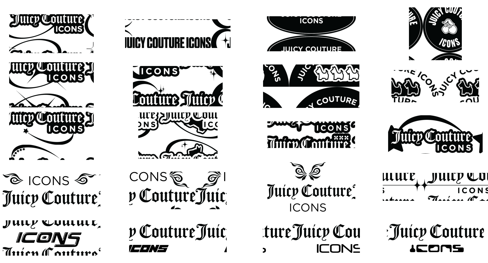

Taking Juicy Couture’s beloved brand and heritage in a new Y2K
direction.
Juicy Couture is an LA-based clothing brand known for the iconic
Juicy velour tracksuit, growing to become a global fashion company
as a casual luxury brand. As part of my internship, I was tasked
with designing a new Y2K direction for Juicy Couture Icons,
encompassing logo designs, clothing hangtags, joker fit pant tags,
and woven labels, along with general social media and email
marketing advertisements for the 2022 holiday season.
moodboard
I began with a moodboard to take stock of Y2K trends and get an
overview of various potential colors, textures, and assets to
create and use. This helped inspire new ideas for logo and
packaging when I was stuck, as well as provided multiple visual
directions to explore and refine.
logo designs
Tasked with designing with the current brand guidelines, such as
the typeface used for "Juicy Couture," and encouraged to use the
heritage symbols (the dog, cherry, and crown) as well as create my
own, I began designing in Illustrator and exploring every
possibility I could think of. I combined some with gradients that
I had created, as well as holographic and colorful stock textures
I found, and ended up choosing a smaller group of logos to
present.

clothing tags
For the clothing tags, I was tasked to design using both the Y2K
direction as well as current Juicy heritage symbols, so I combined
the two in various ways, such as Y2K colors and textures with
heritage symbols or vice versa. I also played with the physical
texturing and layering of the packaging for the hangtags,
designing potential vinyl or other transparent material patterned
with symbols, as well as cutouts of the symbols.